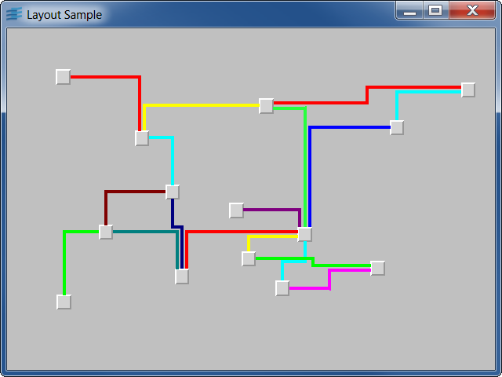

layoutsample1The basic steps for using the layout algorithms are illustrated in this sample.
The basic steps for using the layout algorithms are illustrated in this sample.
It creates an IlvGrapher instance, populates this grapher with ILV Rogue Wave Views file
containing nodes and links.
It creates an IlvOrthogonalLinkLayout instance that is attached to the grapher
instance.
It performs the layout and shows a view attached to the grapher.
IlvOrthogonalLinkLayout